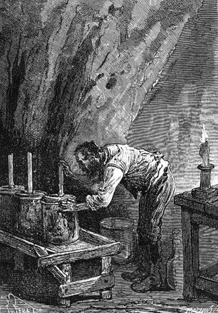
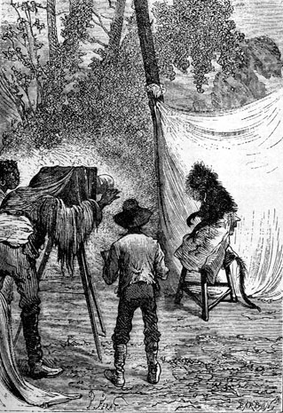
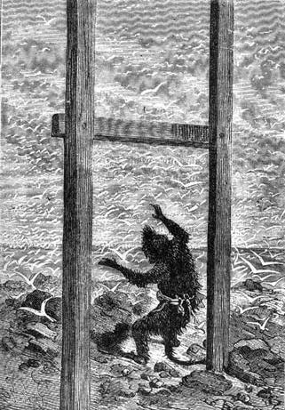

Herbert went to the door. He saw Ayrton slide down the elevator’s rope and disappear into the darkness.
“The poor man!” he said after he returned.
“He will return,” said Cyrus Smith.
“So, Mister Cyrus,” shouted Pencroff, “what do you say to that? If Ayrton did not throw this bottle into the sea, then who did?”
Surely, if ever a question had to be asked, this was it.
“It was he,” replied Neb, “only the poor soul was already half mad.”
“Yes!” said Herbert, “and he was no longer conscious of what he was doing.”
“That is the only way to explain it, my friends,” Cyrus Smith vividly replied, “and now I understand how Ayrton was able to indicate the exact position of Tabor Island since the very events that preceded his abandonment on the island were known to him.”
“However,” Pencroff noted, “if he still was not a brute when he wrote his document and if it has been seven or eight years since he threw it into the sea, why wasn’t the paper affected by the dampness?”
“That proves,” replied Cyrus Smith, “that Ayrton was deprived of his intelligence much more recently than he thinks.”
“That’s the way it must have happened,” replied Pencroff. “We can’t explain it otherwise.”
“It would be quite unexplainable,” replied the engineer, who did not seem to want to prolong the conversation.
“But has Ayrton told the truth?” asked the sailor.
“Yes,” replied the reporter. “The story that he has told is true on all points. I clearly recall the accounts in the newspapers of Lord Glenarvan’s undertaking and of the result he attained.”
“Ayrton has told the truth,” added Cyrus Smith, “do not doubt it, Pencroff, because it was bitter for him. One tells the truth when he accuses himself in this way.”
The next day—the 21th of December—the colonists descended to the beach. They climbed to the plateau and no longer found Ayrton there. Ayrton had reached his house in the corral during the night and the colonists judged it best not to disturb him with their presence. Time would doubtless do what encouragements could not.
Herbert, Pencroff and Neb then resumed their accustomed occupations. On this day, Cyrus Smith and the reporter were together in the workshop at the Chimneys.
“Do you know, my dear Cyrus,” said Gideon Spilett, “that the explanation that you gave yesterday on the subject of the bottle has not satisfied me at all. How can we admit that the poor fellow was able to write this document and throw the bottle into the sea without having any memory of it?”
“It was not he who threw it in, my dear Spilett.”
“Then you still believe...”
“I believe nothing, I know nothing!” replied Cyrus Smith, interrupting the reporter. “I am content to rank this incident among those which I have not been able to explain to this day!”
“Truthfully, Cyrus,” said Gideon Spilett, “these things are unbelievable! Your rescue, the case stranded on the sand, Top’s adventures, finally this bottle... Will we ever have some explanation to these enigmas?”
“Yes!” replied the engineer vividly, “yes, if I have to search the very bowels of this island.”
“Chance perhaps will give us the key to this mystery!”
“Chance, Spilett! I hardly believe in chance any more than I believe in the mysteries of this world. There is a reason for every unexplainable event that has occurred here and I will find it. But while waiting, let us observe and work.”
The month of January arrived and the year 1867 began. Summer activities were carried on industriously. During the days which followed, Herbert and Gideon Spilett went to the corral and assured themselves that Ayrton had taken possession of the dwelling that they had prepared for him. He occupied himself with the numerous flocks confined to his care which saved his companions the trouble of coming every two or three days to visit the corral. However, in order not to leave Ayrton alone for too long a time, the colonists visited him often.
As a result of certain suspicions shared by the engineer and Gideon Spilett, they felt that this part of the island should be subject to a certain surveillance and that Ayrton should not neglect to inform the inhabitants of Granite House of any unexpected incident.
However, such an incident had to be brought to the engineer’s immediate attention. In addition to all the facts relating to the mystery of Lincoln Island, other things might occur which would call for the prompt intervention of the colonists, such as the appearance of a passing vessel on the open sea in view of the western coast, a wreck on the western shore, the possible arrival of pirates, etc.
Cyrus Smith resolved to put the corral into instantaneous communication with Granite House.
On the 10th of January he told his companions about his plan.
“So, how do you intend to proceed, Mister Cyrus?” asked Pencroff. “Are you by any chance thinking of installing a telegraph?”
“Precisely,” replied the engineer.
“Electric?” shouted Herbert.
“Electric,” replied Cyrus Smith. “We have all the elements necessary for making a battery; the most difficult part will be in drawing the iron wire, but by means of a drawplate I think that we will finally succeed.”
“Well, after that,” replied the sailor, “it wouldn’t surprise me if we rolled out a railroad one day.”
They then got to work and began with the most difficult task, that is to say the making of the wires, because if that should miscarry it would be useless to make the battery and the other accessories.
The iron of Lincoln Island, as we know, was of an excellent quality and consequently very suitable for being drawn. Cyrus Smith began by making a drawplate, that is to say a steel plate pierced by conical holes of various sizes which would successively bring the wire to the desired diameter. This piece of steel, after having been tempered “to maximum hardness” as they would say in metallurgy, was firmly fastened to a frame dug into the ground only a few feet from the large falls, whose motive force the engineer was going to use once again.
In fact, they still had the fulling mill there, then not in operation, but whose shaft, when driven under power, would serve to draw the wire and roll it into coils.
The operation was delicate and demanded much attention. The iron, previously prepared in long thin columns whose ends had been thinned with a file, was introduced into the largest caliber of the drawplate, drawn out by the shaft and rolled to a length of twenty five to thirty feet, then unrolled and successively introduced into the holes of smaller diameter. The engineer finally obtained wires forty to fifty feet long, which were easy to splice so as to stretch over this distance of five miles which separated the corral from the Granite House enclosure.
It only needed a few days to carry out this work and when the machine was put in operation, Cyrus Smith left his companions to their task as wire drawers while he occupied himself with making his battery.
His object, in this case, was to obtain a battery of constant current. As is known, the elements of modern batteries are generally composed of retort carbon, zinc and copper. The engineer definitely had no copper. In spite of his searches, he had not found any trace of it on Lincoln Island and he would have to do without it. Retort carbon, that is to say this hard graphite which is found in the retorts of gas works after coal has been dehydrogenated, this they could produce, but it would require the installation of special apparatus which would have been a big job. As to the zinc, it must be remembered that the case found at Flotsom Point had a double envelope of this metal which could not have found a better use under these circumstances.
After thinking about it, Cyrus Smith decided to make a very simple battery based on one proposed by Becquerel in 1820 in which only zinc is used. As to the other materials, nitric acid and potassium, he had that.
This is how the battery was made. The result would be the products of mutual interaction between the acid and the potassium. A certain number of glass bottles were made and filled with nitric acid. The engineer sealed them by means of a cork through which passed a glass tube. This tube was sealed at its lower end with a clay plug held in place with a cloth and then immersed into the acid. A solution of potassium, previously obtained by the burning of various plants, was poured into the tube from above and by this means the acid and the potassium reacted with each other through the clay.

The engineer sealed them by means of a cork...
Cyrus Smith then took two strips of zinc. One was immersed in the nitric acid and the other in the potassium solution. A current was immediately produced going from the strip in the bottle to the strip in the tube, and the two strips, having been connected with a metallic wire, the strip in the tube became the positive pole and that in the bottle the negative pole of the apparatus. Each bottle produced an equal current which, when combined, sufficed to produce all the phenomena of the electric telegraph.
Such was the ingenious yet very simple apparatus constructed by Cyrus Smith, an apparatus which would allow him to establish telegraphic communication between Granite House and the corral.
It was on the 6th of February that they began to drive in the stakes, furnished with glass insulators designed to support the wire which would follow the route to the corral. A few days later, the wire was stretched out ready to carry the electric current which the ground would return to its starting point at a speed of one hundred thousand kilometers per second.
Two batteries had been made, one for Granite House, the other for the corral, because if the corral ought to be able to communicate with Granite House, it would also be useful for Granite House to communicate with the corral.
As to the receiver and the key, they were very simple. At the two stations, the wire was wrapped as an electro-magnet, that is to say a piece of iron wound with a wire. Communication was established between the two poles by the current which, leaving the positive pole, traversed the wire, passed through the electro-magnet which it temporarily magnetized, and returned through the ground to the negative pole. When the current was interrupted, the electro-magnet would immediately demagnetize. It sufficed then to place a bar of soft iron below the electro-magnet which, attracted to it during the passage of the current, would fall back when the current was interrupted. The movement of the bar thus obtained, Cyrus Smith easily attached a pointer on a swivel, which carried an inscription of the letters of the alphabet and in this way they could communicate from one station to the other.
Everything was completely installed on the 12th of February. On this day Cyrus Smith, having thrown a current across the wire, asked if all was going well at the corral and a few moments later he received a satisfactory response from Ayrton.
Pencroff could not contain his joy. Each morning and each evening he sent a telegram to the corral which always replied.
This mode of communication presented two very real advantages, first because it permitted them to verify the presence of Ayrton at the corral, and then because it did not leave him completely isolated. Besides this, Cyrus Smith never allowed a week to pass without going to see him, and Ayrton came to Granite House from time to time where he was always well received.
The fine season passed in this way amidst their accustomed activity. The resources of the colony had increased from day to day, particularly with vegetables and corn, and the plants that had been brought over from Tabor Island succeeded perfectly. Grand View Plateau presented a very reassuring sight. The fourth corn harvest had been admirable and we may be sure that no one thought of counting if there were four hundred billion grains in the harvest. Cyrus Smith nevertheless advised Pencroff that even if he could count one hundred fifty grains per minute, making nine thousand per hour, he would need about five thousand five hundred years to complete his operation and the worthy sailor decided to give up the idea.
The weather was magnificent and the temperature was very warm in the daytime, but in the evening the breezes from the open sea moderated the summer’s heat and brought cool nights for the inhabitants of Granite House. However they had a few storms which, if they were not of long duration, fell none the less on Lincoln Island with an extraordinary force. For several hours the lightning lit up the sky and the thunder did not let up.
During this time, the small colony was very prosperous. The hosts of the poultry yard had increased to excess and it became urgent to reduce the population to a more moderate number. The pigs had already produced young ones and one can understand that the care given to these animals absorbed a large part of Neb’s and Pencroff’s time. The onagers, who had two pretty offspring, were often mounted by Gideon Spilett and Herbert, who became an excellent horseman under the reporter’s supervision. They also harnessed them to the cart either to carry wood and coal to Granite House or to carry the various mineral products used by the engineer.
Several trips were made at this time into the depths of the forests of the Far West. The explorers could venture there without having to fear the excess temperature because the solar rays hardly pierced the thick branches above them. They also visited the left bank of the Mercy which bordered the route that went from the corral to the mouth of Falls River.
But during these excursions, the colonists took care to be well armed because they frequently encountered certain very savage and very ferocious wild boar with whom they had serious conflicts.
During this time, they also declared war on the jaguars against whom Gideon Spilett had a special grudge. His pupil, Herbert, seconded him. Armed as they were, there was hardly any need to fear an encounter with one of these beasts. Herbert’s fearlessness was superb and the reporter’s coolness was astonishing. About twenty magnificent skins already decorated the large hall of Granite House and if this continued, the jaguar race would soon become extinct on the island, a goal pursed by the hunters.
The engineer sometimes took part in these reconnaissances made in the unknown portions of the island, which he observed with minute attention. It was for traces other than of animals that he looked for in the thickest portions of these vast woods, but never did he see anything suspicious. Neither Top nor Jup, who accompanied him, indicated that there was anything extraordinary there although more than once the dog barked at the opening of the well which the engineer had explored without result.
It was at this time that Gideon Spilett, assisted by Herbert, took several pictures of the most picturesque parts of the island by means of the photographic apparatus that had been found in the case and which had not been used until then.
This apparatus, which was provided with a powerful objective, was very complete. The materials necessary for photographic reproduction, collodion to prepare the glass plate, silver nitrate to sensitize it, sodium hyposulphate to fix the image obtained, ammonium chloride to wash the paper intended to give the positive print, sodium acetate and gold chloride to soak the latter, nothing was missing. Even the paper was there, all chlorinated, and before placing them on the frame over the negative prints, it sufficed to steep them for a few minutes in the silver nitrate diluted with water.
In a short time, the reporter and his assistant became skilful operators and they obtained rather beautiful prints of the countryside, such as a full view of the island taken from Grand View Plateau, with Mount Franklin in the background, the mouth of the Mercy so picturesquely surrounded by high rocks, the glade and the corral against the first high land of the mountain, all the curious development of Cape Claw, Flotsom Point, etc.
The photographers did not forget to take portraits of all the inhabitants of the island without exception.
“Just plain folks,” said Pencroff.
And the sailor was enchanted to see his picture, faithfully reproduced, decorating the walls of Granite House. He joyfully stared at this exposition as if he were in front of the richest showcases of Broadway.
But it must be said, the most successful portrait of all was incontestably that of Master Jup. Master Jup had posed with a seriousness impossible to describe and his picture was expressive.

Master Jup had posed with a seriousness...
“One would say that he was about to grin,” shouted Pencroff.
If Master Jup had not been content, he would have been hard to please; but he was content and he contemplated his image sentimentally and with a bit of self-conceit.
The intense summer heat ended with the month of March. Sometimes they had rainy weather but it was still hot. This month of March, which corresponds to the month of September in the northern latitudes, was not as fine as they had hoped. Perhaps it announced an early and rigorous winter.
They were even able to believe one morning—the 21st—that the first snow had made its appearance. Herbert had gone to one of the Granite House windows at an early hour and shouted:
“Look here, the islet is covered with snow.”
“Snow at this time of the year?” replied the reporter, who had joined the lad.
Their companions were soon beside them and they could only say that not only the islet but the entire shore at the foot of Granite House was covered with a white layer uniformly spread out on the ground.
“It really is snow!” said Pencroff.
“Or it resembles it very much!” replied Neb.
“But the thermometer reads 58° (14°C above zero),” noted Gideon Spilett.
Cyrus Smith looked at the white covering without saying anything because he really did not know how to explain this phenomenon at this time of the year at this temperature.
“A thousand devils!” shouted Pencroff, “our plantations will be frozen!”
And the sailor was about to descend when he was preceded by the agile Jup who slid down to the ground.
But the orang had not touched the ground when the enormous layer of snow rose up and scattered into the sky in such innumerable flocks that the light from the sun was masked for a few minutes.
“Birds,” shouted Herbert.
It was in fact, swarms of sea fowl with brilliant white plumage. They had set down on the islet and on the shore by the hundreds of thousands and they disappeared in the distance, leaving the colonists dumbfounded as if they had witnessed a change from summer to winter in a scene from fairyland. Unfortunately, that change had been so sudden that neither the reporter nor the lad could attack one of these birds whose species they did not recognize.

They had set down by the hundreds of thousands.
The 24th of March came a few days later and it was two years since the castaways from the sky had been thrown on Lincoln Island.